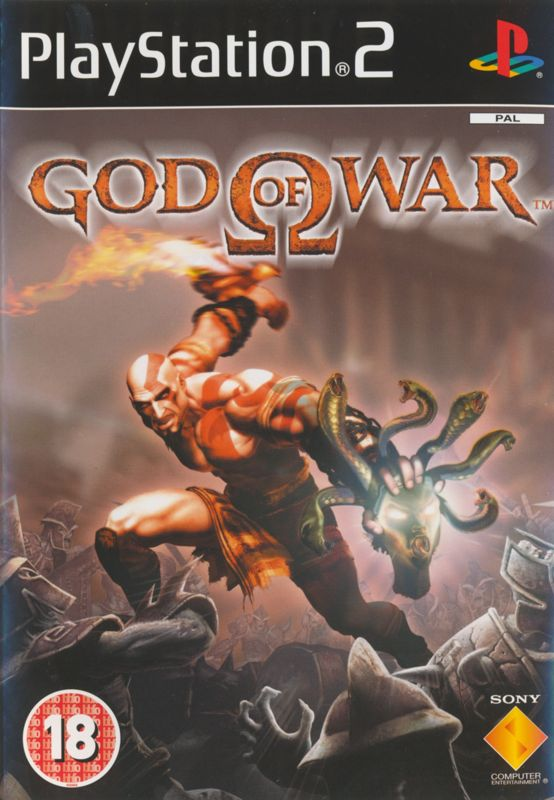

God of War é um jogo de Playstation 2 lançado em 22 de março de 2005. Sendo um jogo de ação-aventura fortemente influenciado pela mitologia grega, God of War foi desenvolvido pela divisão de Santa Monica da Sony Computer Entertainment.
Foi muito bem recebido por críticos e fãs e foi o ganhador de muitos prêmios, incluindo honras de "Jogo do Ano" da Academia de Artes Interativas e Ciências. O jogo já está disponível na biblioteca de 'Maiores Hits' do PlayStation 2. Graças, em parte, ao sucesso comercial e de crítica do original, uma sequência intitulada God of War II foi lançada em 13 de março de 2007. Em 2007, a IGN nomeou God of War o melhor jogo de Playstation 2 de todos os tempos, em sua lista "Top 25 PS2 Games".
God of War se concentra fortemente em sangrentos combates e resolução de enigmas, muito semelhante a Prince of Persia: Warrior Within. Kratos, o personagem principal da série God of War, usa um leque de armas e poderes mágicos para lutar contra muitos tipos diferentes de inimigos, sendo a maioria deles baseada em criaturas da mitologia grega. Na maioria dos inimigos, Kratos também pode iniciar um mini-game que envolve pressionar uma sequência de botões com precisão, girar analógicos ou apertar botões repetidamente para finalizá-los com uma morte especial.
Espalhados por todo o jogo e obtidos de várias formas, os Orbes vermelhos lhe permitem aumentar de nível suas armas e poderes mágicos. Kratos também pode encontrar Olhos de Górgona e Penas de Fênix, permitindo-lhe aumentar a sua vida e magia, respectivamente.
Ao longo da história, Kratos obtém numerosas armas e poderes dos vários deuses do Olimpo, muitos pertencentes a mitos gregos clássicos, tais como magias como Olhar de Medusa, ou armas como a Lâmina de Ártemis.
God of War é notável por sua apresentação em formato de filme. Enquanto a maioria dos jogos épicos sofrem com telas de carregamento, quebrando a imersão, God of War passa perfeitamente da tela de título, para sequências FMV, para o gameplay, e vice-versa, com muito pouco tempo de carregamento. Os tempos de carregamento são mascarados através da pré-renderização da próxima área enquanto o jogador percorre uma área longa e relativamente vazia.